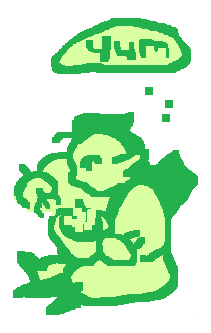

Hiiii hello!! This site is still very under development so if you happen to stumble onto here please give it a second lol. I am trying to slowly populate as I find time!!!
This is a website designed to compile all of my original character content for LVSN (temporarily titled Ellie Harris vs the Vampires), from plot relevant information, to art archives, to paper crafts!
LVSN is my narrative story primarily about three vampire hunters and how their journey's have
led them astray:
 Ellie Harris, the story's primarily protagonist, Elliot Harris, her brother who's ambition led him down the path of
vampirism, and Noelle Bergund, her teammate who's kindness and
naivety made her a perfect
victim for the evils of the forest.
Vampires and vampire hunters live in strict opposition, with vampires following a slightly non-traditional definition. The hunters of the world work to fight against these evil creatures, combatting thier supernatural abilities with hard earned skills and battle prowess. Canin is a town that is composed primarily of these hunters, raising lost children into seasoned hunters for the sake of the village. Ellie Harris, AJ Caine, and Noelle Bergund are three recruits who are just about to graduate and earn their chance to prove themselves as hunters. Meanwhile, in the land of vampiric goings-on, Elliot Harris, the vampire king, turns and recruits and army of vampires, in a quest to finally bring victory in the war against mortals.